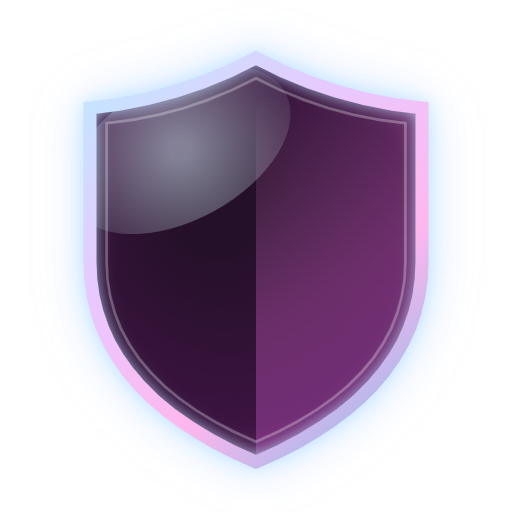
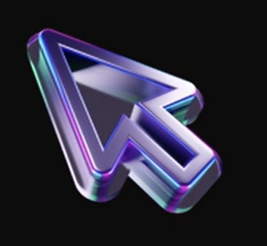
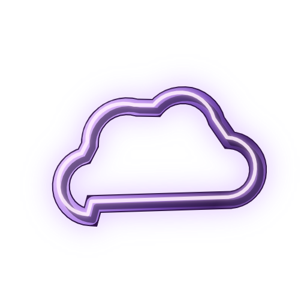
Juriste de formation, j'ai opéré une reconversion vers la cybersécurité, avec un ancrage fort sur la gouvernance, le risque et la conformité. Mon M1 Expert Réseaux, Infrastructures & Sécurité (ORT Toulouse · 3iL Ingénieurs) me donne les bases techniques — Linux, SIEM, réseaux — pour lire un risque SI sous l'angle technique autant que réglementaire. Je recherche un contrat de professionnalisation GRC pour fin septembre 2026. Construisons quelque chose de solide ensemble !
Déploiement complet d'une infrastructure de surveillance centralisée sur Debian 12 : centralisation des logs multi-sources, détection d'intrusions en temps réel, agents sur plusieurs machines Linux & Windows.
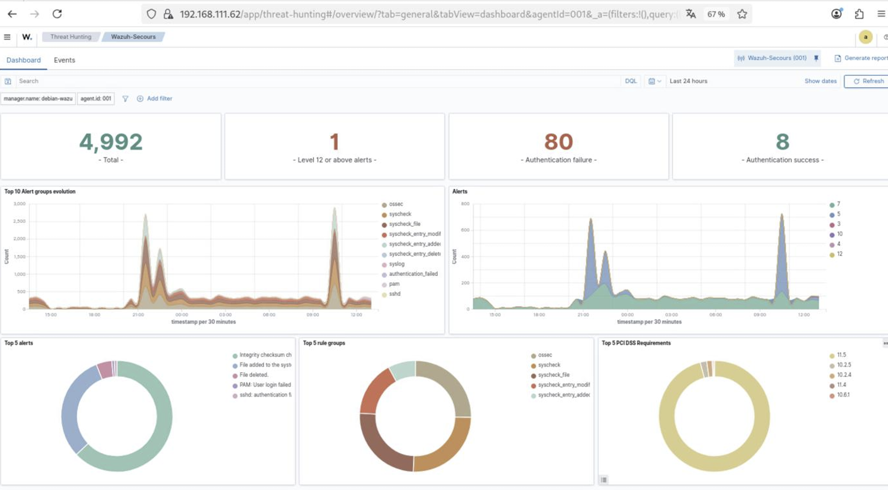
Déploiement de Suricata en mode IDS/IPS : analyse de trafic réseau, écriture de règles de détection, inspection des alertes et corrélation avec les journaux système.
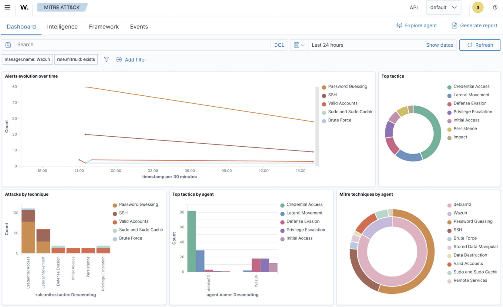
Plateforme SOAR open source sur Docker, intégrée à Wazuh & Suricata : trois scénarios automatisés (brute force SSH, scan de ports, exfiltration DNS) avec enrichissement AbuseIPDB / VirusTotal, blocage Active Response conditionnel et notifications Discord. MTTD 20 s, MTTR < 1 s, taux de blocage 100 %.
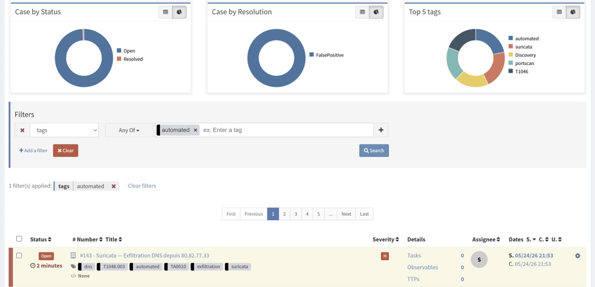
Mise en place d'un domaine Active Directory sur Windows Server : gestion des utilisateurs, groupes et OU, déploiement de GPO et configuration des droits d'accès.
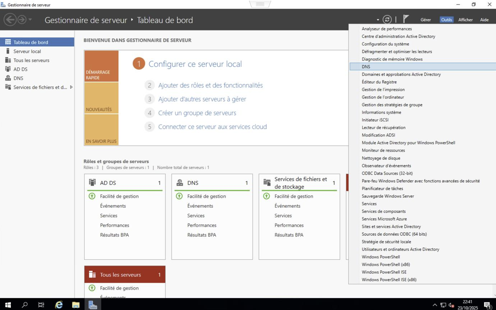
Serveur Zabbix 7.0 LTS sur VM Debian 13 dédiée : supervision de 7 services critiques (Wazuh, SOAR, Active Directory) via agents et checks TCP, triggers multi-sévérités et alertes Discord en temps réel (< 1 min).
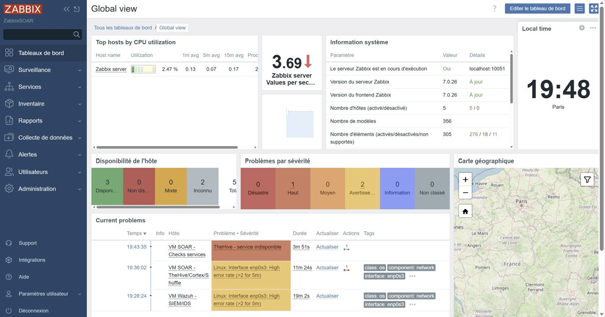
Architecture DR sur Kubernetes avec Rancher, RKE2, MinIO et Velero : sauvegardes programmées, simulation de sinistre et restauration complète d'un cluster en environnement virtualisé.
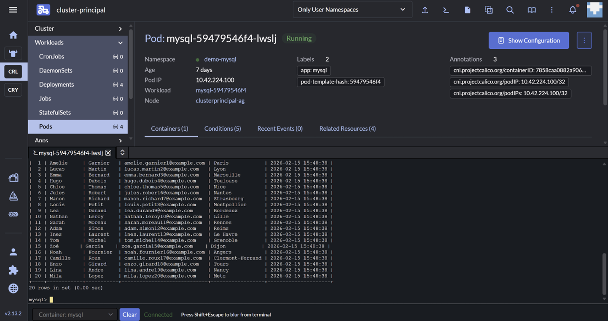
Cloud privé sur VM Debian 12 avec stack LAMP et MariaDB : souveraineté des données, tests fonctionnels de partage et synchronisation.
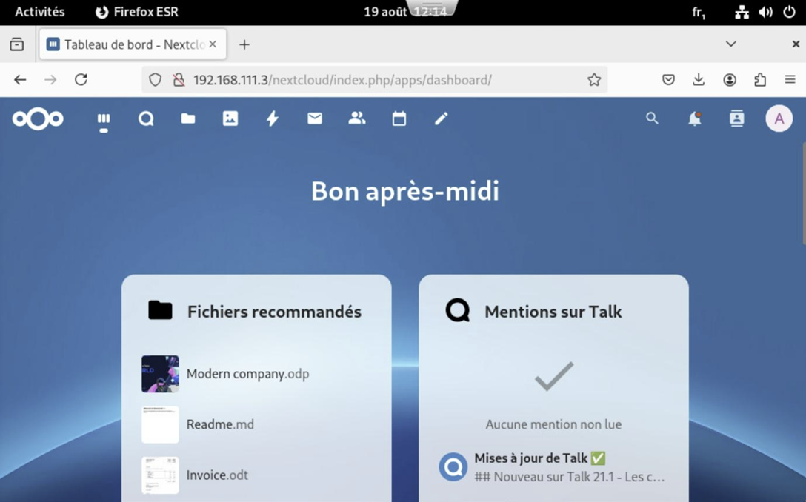
Installation et configuration de GLPI sur Debian 12 : inventaire automatique Windows et Linux via FusionInventory, workflows de tickets et gestion des actifs.
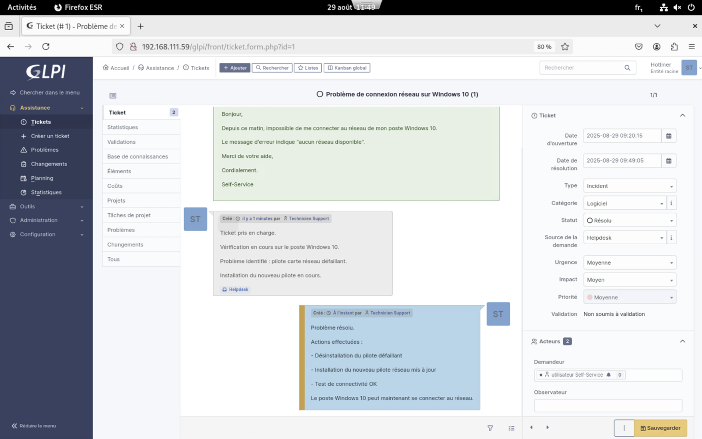
Pilotage stratégique de la sécurité des SI : gouvernance IT, PSSI, conduite du changement, coordination RSSI et contribution au SOC.
Formation technique orientée réseaux, sécurité et infrastructures. Projets pratiques en environnement virtualisé : SIEM, ITSM, cloud privé, architecture réseau.
Programme complet couvrant le NIST CSF, le RGPD, Wireshark, Chronicle SIEM et les fondamentaux de la réponse aux incidents.
Traitement de dossiers sinistres, plateforme PHAROS, coordination équipes terrain / service juridique. Gestion de données sensibles en environnement réglementé.
Préparation de commandes et gestion des stocks. Respect des procédures de sécurité et coordination transport.
Administration du personnel, gestion des contrats et archivage légal. Optimisation des procédures entre RH, juridique et comptabilité.
Traitement des dossiers contentieux, rédaction d'actes juridiques, assistance à la conformité réglementaire des clients.
Droit public, administratif et réglementaire — le socle juridique qui nourrit ma lecture de la conformité SI.